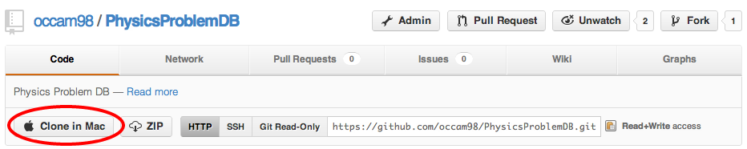

Getting started with development on the Mac
The easiest way to start developing on the mac is to install MAMP, which is an all-in-one installer of Apache (webserver), MySQL(database software) and PHP (scripting software for making dynamic websites.) You can download the free version of MAMP installer here. Note: MAMP will try to talk you into upgrading to the pro version often—you don't need to do this.
1. Install MAMP website tools (Click to download)GitHub is a distributed version control manager. It allows many users to work on the same coding project, and keeps track of changes that they make to the code. You'll need this to download the source code to your machine. There is a wonderful mac gui-interface that makes working with github a breeze.
2. Download GitHub for Mac from mac.github.com.3. Navigate to this url: https://github.com/occam98/PhysicsProblemDB, and click on "Clone in Mac"  This will put a local copy of the code repository on your machine. You'll be asked to confirm a location by the git program.
4. You are almost finished. All you need to do is set up the local apache webserver so that it can serve the files in the Physics Problem Database repository. To do this, you need to create a symbolic link between these two locations in your file structure. Here's how you do it.
5. Find the full path to the physics problem database repository. You can do this by control-clicking the cloned repository in GitHub and selecting "Show in Finder". Then select any file inside that folder and press command-I to get info. The path appears as the 3rd item under the General tab, titled where. Copy this path using command C, and paste it somewhere when you can easily copy it later.
6. Open a window in terminal and type the command:
cd /Applications/MAMP/htdocs
7. You are now in the base directory from where the MAMP Apahce server serves webpages. Now create a symbolic link to the public directory of the physics problem database. The directory will be (directory to repository)/laravel/public
ln -s (type path to PPD directory without parenthesis)/laravel/public /Applications/MAMP/htdocs
8. That's it. Now when you navigate to http://localhost:8888/public you should see a welcome screen to the Physics Problem database project.